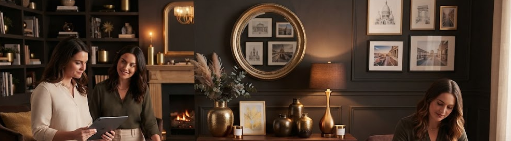
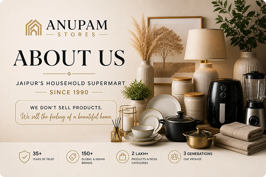

About Us
About Anupam Stores
Jaipur’s Household Supermart — Since 1990
Anupam Stores began as a single shop on Ajmer Road with a simple promise: honest prices, products that last, and staff who tell you the truth about what you are buying. Three decades later that promise has not changed — only the size of the shelf it sits on.
Today we stock more than 150 trusted brands and over 2 lakh products across eight categories — kitchen and cookware, home appliances, dinnerware, home décor, storage, personal care, gifting, and seasonal essentials. You can compare a Prestige cooker against a Hawkins one in your hands, ask the staff which dinner set survives a large family, and walk out with the whole list finished in one trip.
Two stores now carry the name. Anupam Stores Sodala is the retail flagship, built for families, gifting and home setups. Sukh Vrindavan is the wholesale destination, built for kirana stores, hostels, event planners and businesses buying at scale.

“We don’t just sell products — we help Jaipur build its homes.”
Our Story — From a Single Shop to a Household Supermart
-
1990
The Beginning
It started with a young man, a small home décor shop in Jaipur, and one stubborn belief — that even an ordinary family deserves to come home to something beautiful.
Bajrangi Ji Pareek didn’t sell products. He sold the feeling of coming home. From a single rented shop, the seed of Anupam Stores was planted. Slowly — brand by brand, category by category — the shelves grew.
-
2000
Adding Roots
Crockery, cookware and household essentials joined the shelves. Word of mouth did what advertising never could — Jaipur families began telling other Jaipur families: “If it’s for the home, go to Anupam.”
-
2014
The Big Leap
After two decades of building trust one shelf at a time, Anupam Stores expanded into a full-fledged household supermart. 150+ Indian and global brands came on board, transforming a neighbourhood favourite into a destination for every kind of home.
-
Today
The Second Generation
The store carries his name. Anupam Pareek carries his father’s promise — now scaled into a household supermart serving customers across four verticals: retail, B2B, e-commerce, and corporate gifting. The same warmth that brought your parents in. The same honest pricing. Now also one click away.
Two generations. One promise. Beautiful homes for every family.
Visit Our Flagship Stores in Jaipur
Two very different experiences under one name — pick the one that fits what you are shopping for.